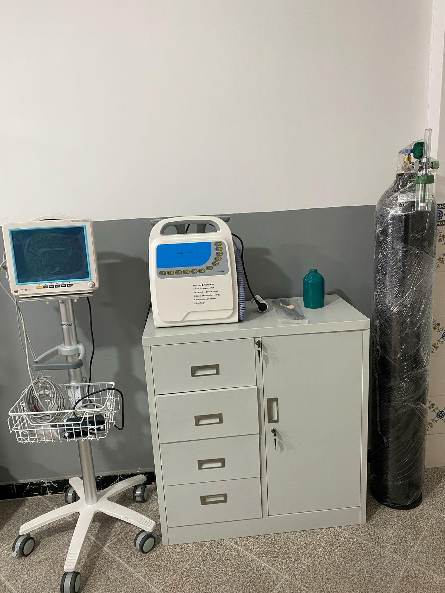

<div class="container">
    <div class="main">
        <div class="row">
            <div class="col-md-6">
                
            </div>
             <div class="col-md-6">
                <h1>Consulta</h1>
                <br>
               

                <p><em>"Na H.S Medical Vida, combinamos excelência médica com um ambiente humanizado.Sua saúde merece melhor"</em></p>
            </div>
        </div>
        <br><br><br>
        <div class="row">
             <div class="col-md-6">
                <h3>Hora de Visita</h3>
                <br>
                <ul>
                    <li><strong>Enfermaria: </strong> 14h00-16h00(todos os dias)</li>
                    <li><strong>Apartamentos:</strong> 10h00-20h00(todos os dias)</li>
                </ul>
                <p><em>Máx. 2 visitantes simultâneo</em></p>
                <br>

                <h3><strong>Reclamações/Sugestões</strong></h3>
                <ol>
                    <li><strong>Presencia:</strong>Balção de Atendimento</li>
                    <li><strong>Online:</strong>contacto&#64;clinicahsmedicalvida.com ou formulário no <a href="/agendamento">Aqui</a></li>
                    <li><strong>Telefone:</strong> (+351) 123 789 (8h-20h)</li>
                </ol>
                <p>Resposta em 48h úteis</p>

                <h3>Compromisso</h3>
                <ul>
                    <li>Confidencialidade</li>
                    <li>Todas as reclamações analisadas pela Equipa de Qualidade</li>
                </ul>

                <h3><strong>Contacto Geral:</strong> contacto&#64;clinicahsmedicalvida.com</h3>
                <p><em>"Valorizamos o seu feedback para"</em></p>

                <p>Faça uma tour exclusivo pelas nossas instalações e descubra por que somos referência em cuidados de saúde:</p>
                <ul>
                    <li><strong>Recepção acolhedora</strong> com atendimento personalizado</li>
                    <li><strong>Consultório modernos</strong> equipados com tecnologia de ponta</li>
                    <li><strong>Áreas de internamento</strong>(enfermarias e apartamentos privativos)</li>
                    <li><strong>Salas de procedimentos</strong> e equipamento de última geração</li>
                    <li><strong>Espaços dedicados</strong> (Fisioterapia, Urgências, Diagnóstico por Imagem)</li>
                </ul>

                <p><em>"Na H.S Medical Vida, combinamos excelência médica com um ambiente humanizado.Sua saúde merece melhor"</em></p>
            </div>
            <div class="col-md-6">
                
            </div>
            
        </div>
    </div>
</div>